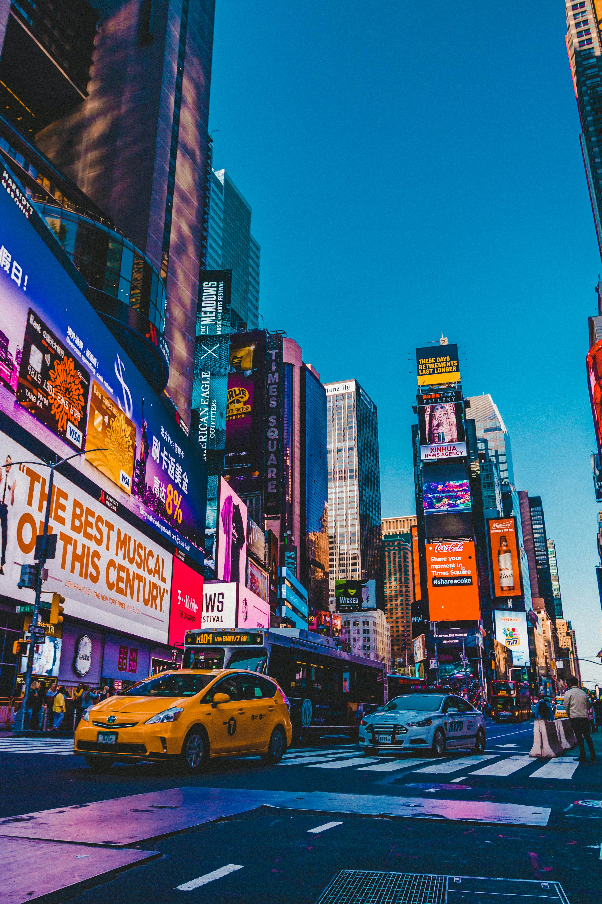
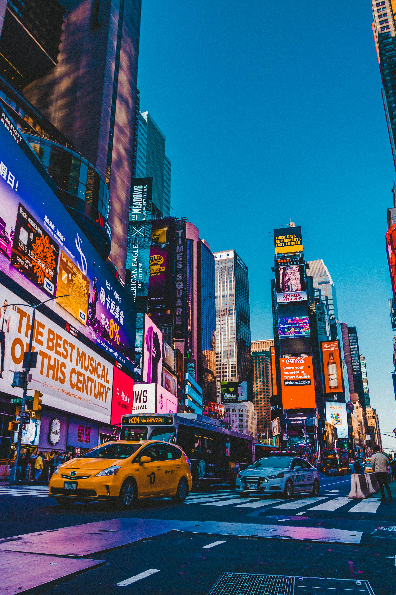

New York
Nueva York, la ciudad que no duerme y que vibra con energía las 24 horas.
Si es tu primera vez en la Gran Manzana (o la décima), estos tres destinos son paradas obligatorias:
Si es tu primera vez en la Gran Manzana (o la décima), estos tres destinos son paradas obligatorias:
- 🗽 Estatua de la Libertad – El símbolo de la libertad Ubicada en Liberty Island, la Estatua de la Libertad es uno de los monumentos más famosos del mundo. Regalo de Francia a Estados Unidos en 1886, representa la libertad y la bienvenida a millones de inmigrantes.
- 🌳 Central Park – Un oasis en medio del caos Con más de 340 hectáreas, Central Park es el pulmón verde de Manhattan. Ideal para caminar, andar en bici, remar en el lago o simplemente relajarte en el pasto con vistas espectaculares a los rascacielos. Dentro del parque encontrarás desde esculturas famosas hasta el zoológico, pasando por lagos, puentes y rincones de película.
- 🌆 Times Square – El corazón luminoso de la ciudad Caótico, vibrante, lleno de luces y pantallas gigantes, Times Square es el centro de la acción neoyorquina. Ubicado en la intersección de Broadway y la Séptima Avenida, es un lugar que hay que vivir de noche. Desde aquí podés acceder a los teatros de Broadway, tiendas abiertas hasta tarde y una atmósfera que solo Nueva York puede ofrecer.
✨ Viví Nueva York al máximo Estos tres íconos son solo el comienzo. Cada rincón de Nueva York guarda una historia, una foto y una emoción. Prepará tu cámara, calzate zapatillas cómodas… ¡y salí a explorar la ciudad más famosa del mundo!
 
